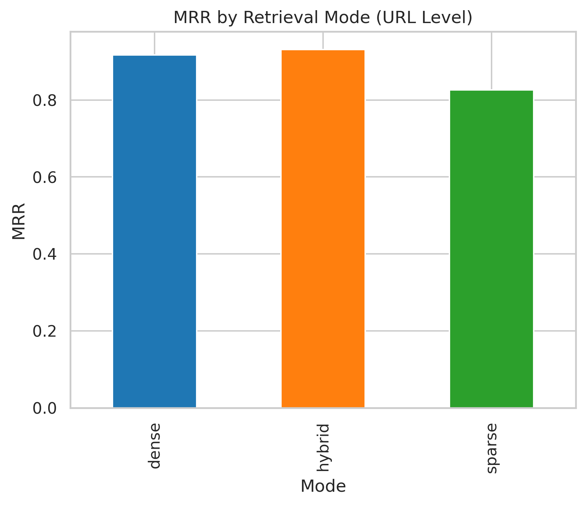
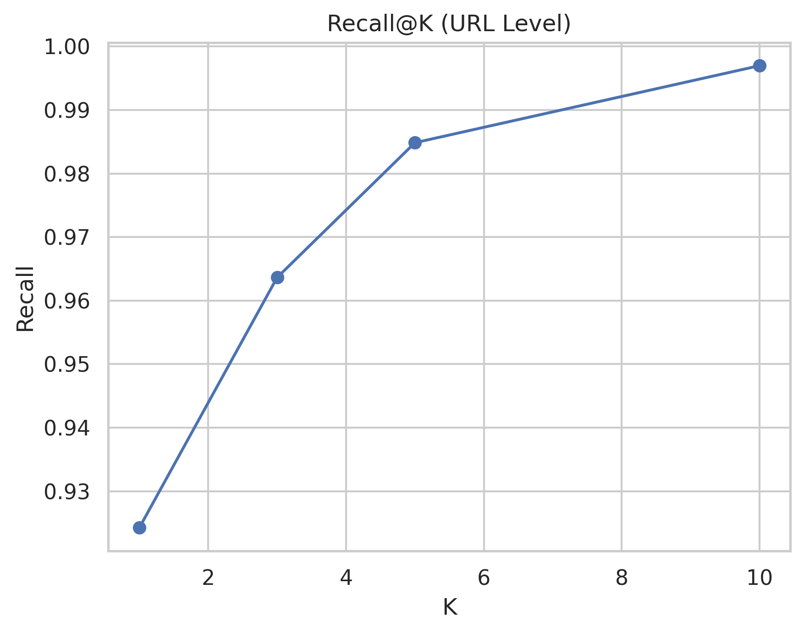
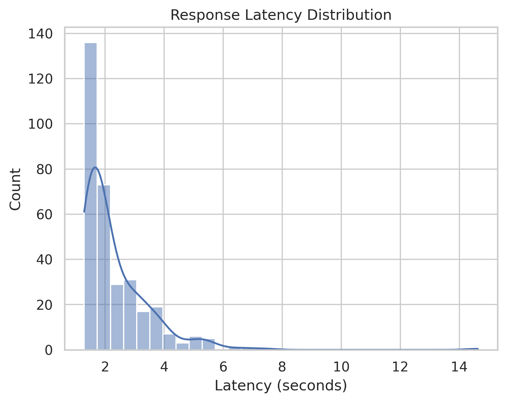
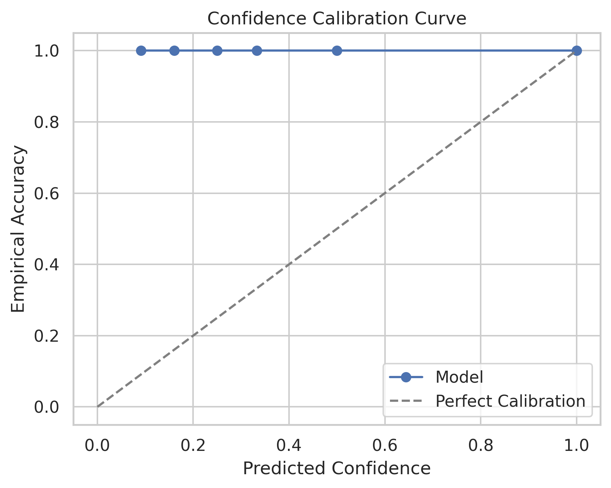
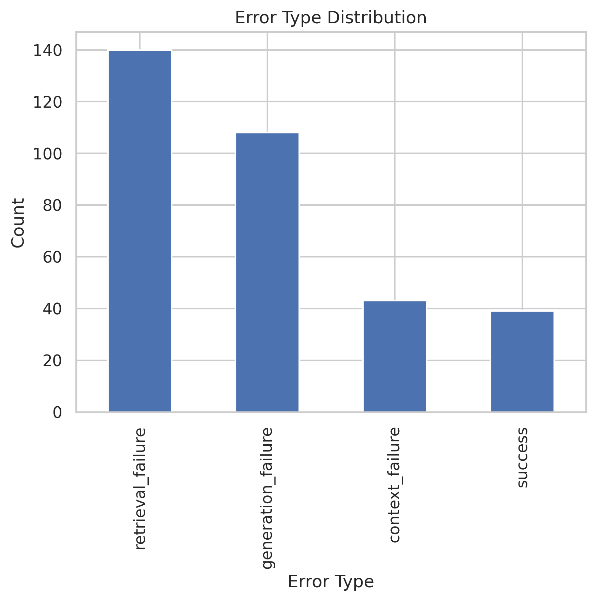
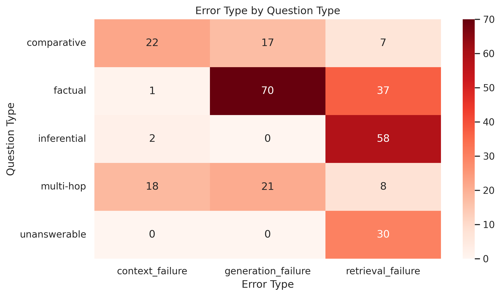
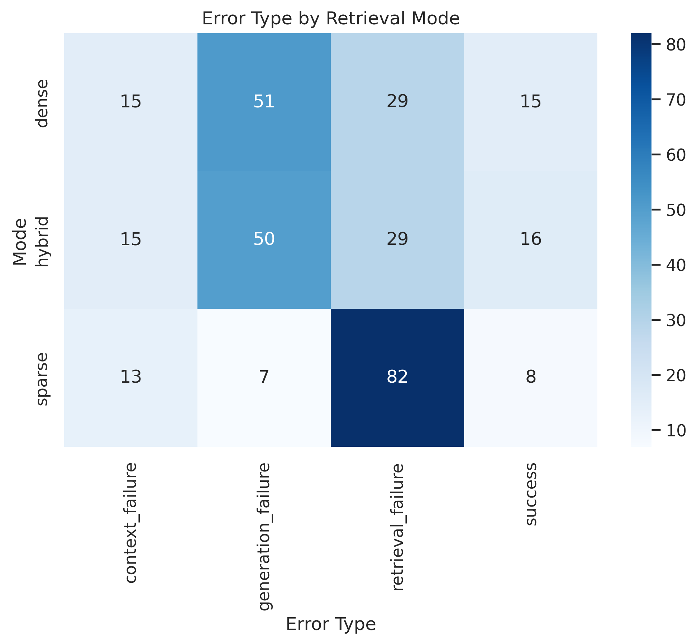

{
"corpus_checksum": "f227cd47341736f1d9fd2d23f1b204f68f0028b91efc1bd76095a0a4f543a8ab",
"questions_checksum": "0fd7180f199c54dfa638c89901e81216cf1034f10074af42dd01ebd17c53d831",
"num_chunks": 4991,
"num_questions": 110,
"timestamp": "2026-01-17T18:31:17.878756Z"
}
{
"dense": {
"MRR_URL_Level": 0.9174,
"Recall@5_URL": 0.963,
"Recall@10_URL": 1.0,
"BERTScore_F1": 0.8195,
"ECE": 0.0608,
"Confidence_Correctness_Correlation": 0.904,
"Answer_Diversity": 1.0,
"Hallucination_Rate": 0.7909
},
"sparse": {
"MRR_URL_Level": 0.8259,
"Recall@5_URL": 0.9643,
"Recall@10_URL": 1.0,
"BERTScore_F1": 0.8112,
"ECE": 0.0443,
"Confidence_Correctness_Correlation": 0.9918,
"Answer_Diversity": 0.76,
"Hallucination_Rate": 0.8909
},
"hybrid": {
"MRR_URL_Level": 0.9316,
"Recall@5_URL": 0.9877,
"Recall@10_URL": 0.9877,
"BERTScore_F1": 0.8046,
"ECE": 0.0504,
"Confidence_Correctness_Correlation": 0.9191,
"Answer_Diversity": 0.9235,
"Hallucination_Rate": 0.7909
}
}
An LLM (FLAN-T5) was used as an automatic evaluator to assess: factual accuracy, completeness, relevance, and coherence. Scores are averaged over the first 20 questions per mode.
{
"dense": {
"accuracy": 0.0,
"completeness": 0.0,
"relevance": 0.0,
"coherence": 0.0
},
"sparse": {
"accuracy": 0.0,
"completeness": 0.0,
"relevance": 0.0,
"coherence": 0.0
},
"hybrid": {
"accuracy": 0.0,
"completeness": 0.0,
"relevance": 0.0,
"coherence": 0.0
}
}
| mode | question_id | question | question_type | rank_of_correct_url | generated_answer | latency_sec | entity_coverage | hallucinated | confidence | correct | error_type | judge_accuracy | judge_completeness | judge_relevance | judge_coherence | judge_explanation |
|---|---|---|---|---|---|---|---|---|---|---|---|---|---|---|---|---|
| dense | 0 | What is Department of Aerospace Science and Technology? | factual | 1 | Air Force Squadron. | 2.429 | 0.000 | 1 | 1.0 | 1 | generation_failure | 0.0 | 0.0 | 0.0 | 0.0 | LLM judge failed to parse response |
| dense | 1 | What is Orlando Magic? | factual | 1 | the NBA Finals, in 1995 and 2000 | 2.098 | 0.000 | 1 | 1.0 | 1 | generation_failure | 0.0 | 0.0 | 0.0 | 0.0 | LLM judge failed to parse response |
| dense | 2 | What is Punk ideologies? | factual | 1 | Punk ideology | 1.438 | 0.000 | 1 | 1.0 | 1 | generation_failure | 0.0 | 0.0 | 0.0 | 0.0 | LLM judge failed to parse response |
| dense | 3 | What is Gaelic Ireland? | factual | 1 | Vikings began raiding and founding settlements along Ireland's coasts and waterways, which became its first large towns. | 2.873 | 1.000 | 0 | 1.0 | 1 | generation_failure | 0.0 | 0.0 | 0.0 | 0.0 | LLM judge failed to parse response |
| dense | 4 | What is Schomburgk Line? | factual | 1 | Mark Brandenburg | 1.449 | 0.000 | 1 | 1.0 | 1 | generation_failure | 0.0 | 0.0 | 0.0 | 0.0 | LLM judge failed to parse response |
| dense | 5 | What is Human rights? | factual | 1 | Amnesty International (2004). Amnesty International Report. | 2.593 | 0.000 | 1 | 1.0 | 1 | generation_failure | 0.0 | 0.0 | 0.0 | 0.0 | LLM judge failed to parse response |
| dense | 6 | What is School of Molecular Sciences? | factual | 1 | fundamental molecule science | 1.697 | 0.000 | 1 | 1.0 | 1 | generation_failure | 0.0 | 0.0 | 0.0 | 0.0 | LLM judge failed to parse response |
| dense | 7 | What is Method of loci? | factual | 1 | mnemonic method is a way to remember information by using mental images and familiar places. | 2.492 | 0.000 | 1 | 1.0 | 1 | generation_failure | 0.0 | 0.0 | 0.0 | 0.0 | LLM judge failed to parse response |
| dense | 8 | What is Missile lofting? | factual | 1 | The disadvantages of lofting include: | 1.754 | 1.000 | 0 | 1.0 | 1 | generation_failure | 0.0 | 0.0 | 0.0 | 0.0 | LLM judge failed to parse response |
| dense | 9 | What is Reward theory of attraction? | factual | 1 | attraction to another | 1.426 | 0.000 | 1 | 1.0 | 1 | generation_failure | 0.0 | 0.0 | 0.0 | 0.0 | LLM judge failed to parse response |
| dense | 10 | What is Charles Wesley Shilling? | factual | 1 | Distinguished Alumni Award from the University of Michigan (1959); the Golden Cross of the Order of the Phoenix from the Greek Government for creating a method of radiation sterilization of a fly, a technique which helped save the Greek olive crop (1960); Alumnus of the Year from Taylor University (1960); the Albert Behnke | 6.358 | 0.000 | 1 | 1.0 | 1 | generation_failure | 0.0 | 0.0 | 0.0 | 0.0 | LLM judge failed to parse response |
| dense | 11 | What is Housing in Glasgow? | factual | 1 | tenement buildings were constructed to accommodate workers who migrated from the surrounding countryside, the Scottish Highlands, the rest of the United Kingdom, particularly Ireland, and further afield (Italy, Lithuania, Poland) to smaller degrees, to feed the local demand for labour during the Industrial Revolution | 5.148 | 0.000 | 1 | 1.0 | 1 | generation_failure | 0.0 | 0.0 | 0.0 | 0.0 | LLM judge failed to parse response |
| dense | 12 | What is History of writing? | factual | 2 | language | 1.317 | 0.000 | 1 | 0.5 | 1 | generation_failure | 0.0 | 0.0 | 0.0 | 0.0 | LLM judge failed to parse response |
| dense | 13 | What is Sound localization? | factual | 1 | level difference between the ears, and the elevation or vertical angle | 2.791 | 0.000 | 1 | 1.0 | 1 | generation_failure | 0.0 | 0.0 | 0.0 | 0.0 | LLM judge failed to parse response |
| dense | 14 | What is County town? | factual | 1 | the county town of each county | 1.666 | 0.000 | 1 | 1.0 | 1 | generation_failure | 0.0 | 0.0 | 0.0 | 0.0 | LLM judge failed to parse response |
| dense | 15 | What is Exploration of Mercury? | factual | 1 | MESSENGER | 1.542 | 0.167 | 1 | 1.0 | 1 | generation_failure | 0.0 | 0.0 | 0.0 | 0.0 | LLM judge failed to parse response |
| dense | 16 | What is The Shade Room? | factual | 1 | The Shade Room is a media company, founded by Angelica Nwandu in March 2014. | 2.411 | 0.250 | 1 | 1.0 | 1 | generation_failure | 0.0 | 0.0 | 0.0 | 0.0 | LLM judge failed to parse response |
| dense | 17 | What is Geohumanities? | factual | 1 | places and objects in spatial representations visualized via geo-media | 2.069 | 0.000 | 1 | 1.0 | 1 | generation_failure | 0.0 | 0.0 | 0.0 | 0.0 | LLM judge failed to parse response |
| dense | 18 | What is City network? | factual | 1 | urbanised | 1.906 | 1.000 | 0 | 1.0 | 1 | generation_failure | 0.0 | 0.0 | 0.0 | 0.0 | LLM judge failed to parse response |
| dense | 19 | What is Marine technology? | factual | 1 | inland, coastal, short sea and deep sea shipping | 2.016 | 0.000 | 1 | 1.0 | 1 | generation_failure | 0.0 | 0.0 | 0.0 | 0.0 | LLM judge failed to parse response |
| dense | 20 | What is Fifth Giant? | factual | 1 | The Fifth Giant is theorized to have been ejected from the Solar System due to gravitational interactions during the chaotic phase of planetary migration, approximately 4 billion years ago. | 3.711 | 0.000 | 1 | 1.0 | 1 | generation_failure | NaN | NaN | NaN | NaN | NaN |
| dense | 21 | What is Kurdish literature? | factual | 1 | Kurdish literature | 1.508 | 0.000 | 1 | 1.0 | 1 | generation_failure | NaN | NaN | NaN | NaN | NaN |
| dense | 22 | What is Substellar object? | factual | 1 | 0.013 solar masses) | 1.615 | 0.500 | 0 | 1.0 | 1 | success | NaN | NaN | NaN | NaN | NaN |
| dense | 23 | What is Microlearning? | factual | 1 | a skill-based education cannot be imparte | 2.209 | 0.000 | 1 | 1.0 | 1 | generation_failure | NaN | NaN | NaN | NaN | NaN |
| dense | 24 | What is Spatial justice? | factual | 1 | Iris Marion Young | 2.154 | 1.000 | 0 | 1.0 | 1 | success | NaN | NaN | NaN | NaN | NaN |
| dense | 25 | What is World Federalism? | factual | 1 | world government | 1.369 | 0.000 | 1 | 1.0 | 1 | generation_failure | NaN | NaN | NaN | NaN | NaN |
| dense | 26 | What is Spatial frequency? | factual | 1 | cortex operates on a code of spatial frequency | 1.794 | 0.000 | 1 | 1.0 | 1 | generation_failure | NaN | NaN | NaN | NaN | NaN |
| dense | 27 | What is Bullet journal? | factual | 1 | a little more advanced | 1.539 | 0.000 | 1 | 1.0 | 1 | generation_failure | NaN | NaN | NaN | NaN | NaN |
| dense | 28 | What is Real economy? | factual | 1 | Output: real economy | 1.542 | 1.000 | 0 | 1.0 | 1 | success | NaN | NaN | NaN | NaN | NaN |
| dense | 29 | What is Houston Rockets? | factual | 1 | the city name | 1.425 | 0.000 | 1 | 1.0 | 1 | generation_failure | NaN | NaN | NaN | NaN | NaN |







| Question | Type | Error | Generated Answer |
|---|---|---|---|
| What is Department of Aerospace Science and Technology? | factual | generation_failure | Air Force Squadron. |
| What is Orlando Magic? | factual | generation_failure | the NBA Finals, in 1995 and 2000 |
| What is Punk ideologies? | factual | generation_failure | Punk ideology |
| What is Gaelic Ireland? | factual | generation_failure | Vikings began raiding and founding settlements along Ireland's coasts and waterways, which became its first large towns. |
| What is Schomburgk Line? | factual | generation_failure | Mark Brandenburg |
| What is Human rights? | factual | generation_failure | Amnesty International (2004). Amnesty International Report. |
| What is School of Molecular Sciences? | factual | generation_failure | fundamental molecule science |
| What is Method of loci? | factual | generation_failure | mnemonic method is a way to remember information by using mental images and familiar places. |
| What is Missile lofting? | factual | generation_failure | The disadvantages of lofting include: |
| What is Reward theory of attraction? | factual | generation_failure | attraction to another |
(Add screenshots of Streamlit app, dashboard, error analysis)